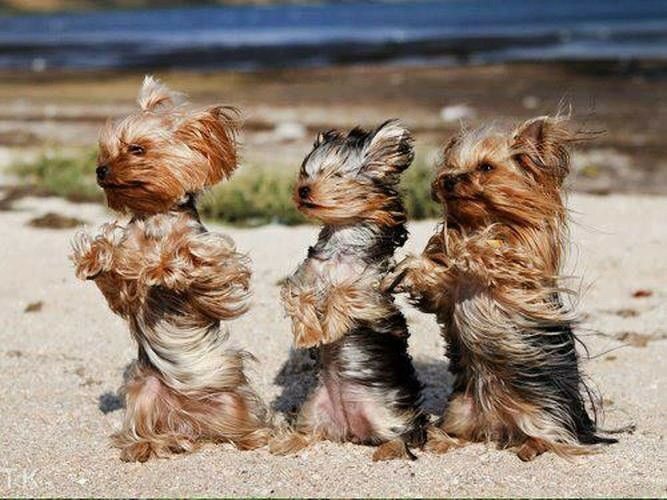
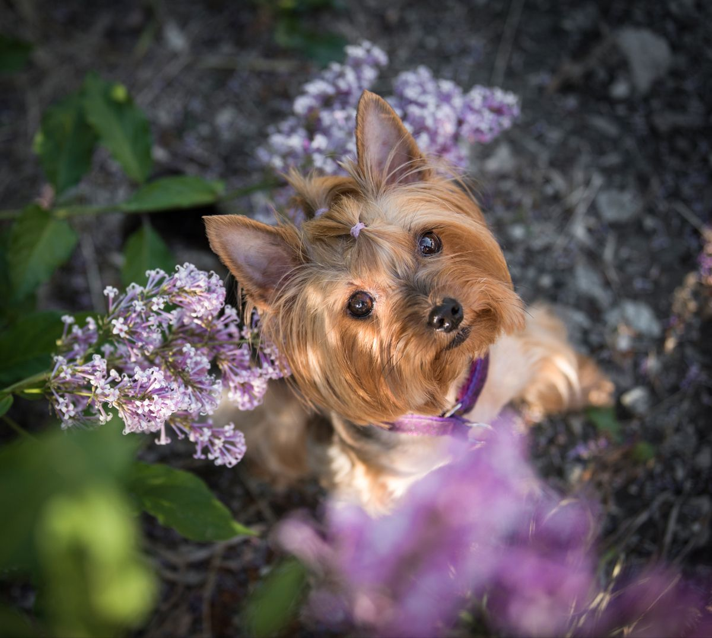

Início |
Origem |
Características |
Cuidados
Cuidados com o Yorkshire



Os cuidados essenciais com um cachorro da raça Yorkshire Terrier incluem a escovação diária dos pelos,
banhos quinzenais e atenção redobrada à saúde bucal e articular.
Pelagem e Higiene
- Banhos a cada 15 dias: Use água morna e xampus específicos para cães. Seque muito bem com secador para evitar fungos na pele.
-
Limpeza facial e de ouvidos: Retire remelas diariamente com um pano úmido e limpe as orelhas com cuidado para prevenir infecções
- Escovação diária: Essencial para evitar nós e emaranhados, principalmente se o pelo for mantido longo.
Saúde e Prevenção
- Cuidados dentários: A raça tem alta tendência a acumular tártaro. Escove os dentes do pet regularmente e faça limpezas veterinárias periódicas.
-
Proteção articular: Evite que filhotes pulam de locais altos ou corram em pisos muito escorregadios para prevenir luxações de patela e traumas.
-
emperatura: Yorkies toleram mal o calor excessivo e o frio intenso; proteja-os das mudanças bruscas de temperatura.
Alimentação e Exercícios
- Alimentação balanceada: Ofereça ração de alta qualidade específica para cães pequenos e dividida em pelo menos duas refeições diárias para adultos.
-
Passeios moderados: Caminhadas diárias ajudam a gastar a energia típica da raça e mantêm o peso ideal.